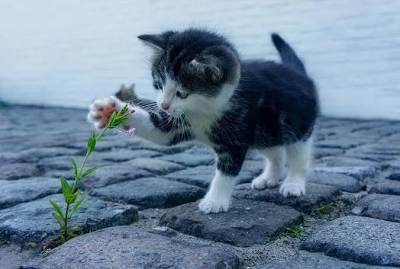
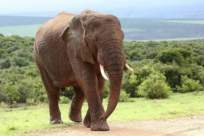

O cachorro é conhecido como o melhor amigo do homem, sendo um animal de tamanho médio e amplamente criado como doméstico. Eles são extremamente leais e possuem uma capacidade incrível de se comunicar com seus tutores através de expressões e gestos.

Os gatos são felinos de pequeno porte, muito populares como animais domésticos devido à sua independência e agilidade. Eles possuem sentidos aguçados, como uma visão noturna excelente, e são conhecidos por sua natureza curiosa e afetuosa.

O elefante é o maior animal terrestre vivo, possuindo um tamanho grande e sendo um animal selvagem, não doméstico. Eles vivem em manadas complexas, demonstram alta inteligência e são fundamentais para o equilíbrio dos ecossistemas onde habitam.
| Animal | Tamanho | Doméstico |
|---|---|---|
| Cachorro | Médio | Sim |
| Gato | Pequeno | Sim |
| Elefante | Grande | Não |